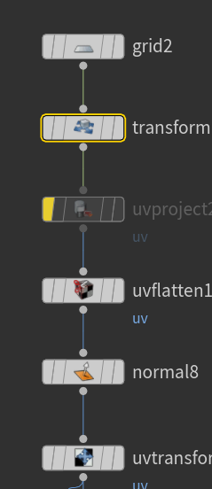
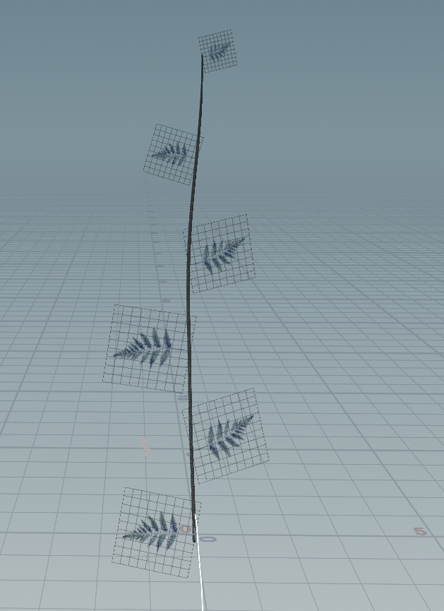
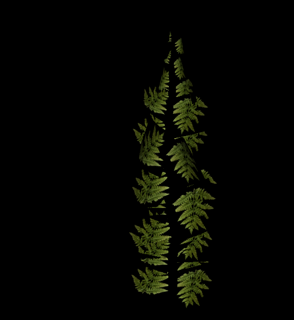
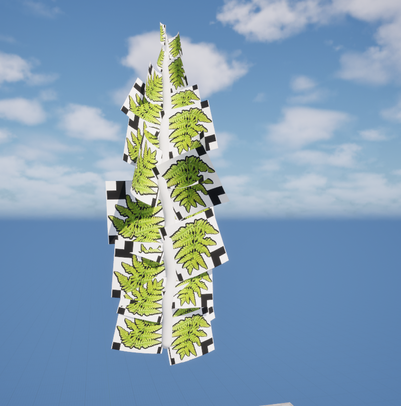
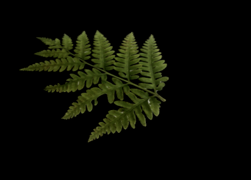
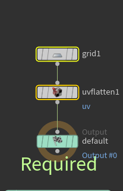

Week4
Opacity Map
Feb 1
HAVE COMPLETED:
TO-DO LIST:
-
Tested USD variants on a single plant asset
-
Authored and layered the variants in Solaris
-
Imported the USD into Unreal and verified the workflow
-
Figured out USD variants with multiple materials
-
Set up the USD layout in Houdini, integrated the variants, and used them in Unreal
-
Try Opacity Mask
In order to get cheaper leaves, I used Yichen's fern and try to assign the opacity map on it. We can use Quickuvshade visulize the texture in Sop Level.
Problem-solving

Problem: I started with a grid and used it to replace the original leaves, but I ran into the issue shown in the image. I suspect the repeated pattern is caused by the grid’s UV projection.

Solution: So I used UV Flatten instead of UV Project, and the result looks good now.


I also added a keyframe animation to make it look like it’s swaying in the wind.


Render
After that, I brought it into Unreal and used Component Builder, but it was not successful. I also imported it back into Houdini as a reference, but that was not very successful either.



No matter whether the geometry is static or animated, it still has the same problem.
I also tried a single leaf without animation, and the result is still not good, even though it looks normal in Houdini.



Even when I build the grid directly inside the component, it still has a problem when I import it into Unreal.
-
Use VAT and integrate with Opacity Map
-
Work on USD Variants and also integrate with Opacity Map